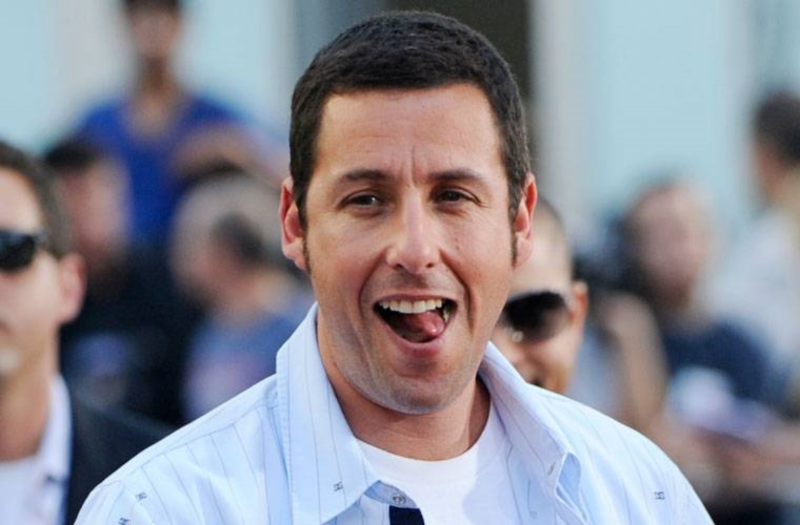

Olá sou Adam Sandler, sou uns dos atores mais famosos do mundo, tenho 56 anos mas com carinha de 20. e atualmente tenho monha casa em Brooklyn e Manchester, chora bebe enquanto você tá ai no Brasil.

Bom tudo começou aos 17 anos fazendo stand-up, até que foi descoberto pelo comediante Dennis Miller. Em 1990, foi contratado pelo Saturday Night Live como roteirista, e no ano seguinte passou a fazer parte do elenco do programa, onde ficou famoso pelos personagens Opera Man, Cajun Man, Canteen Boy e The Gap Girl. Apartir daqui tudo ficou melhor, fui descobertos por varios progamas e só crescendo até que em 1999 Sandler fundou sua própria produtora, a Happy Madison, responsável por todos os seus filmes desde 2000. Em fevereiro de 2011 ganhou uma estrela na Calçada da Fama de Hollywood.